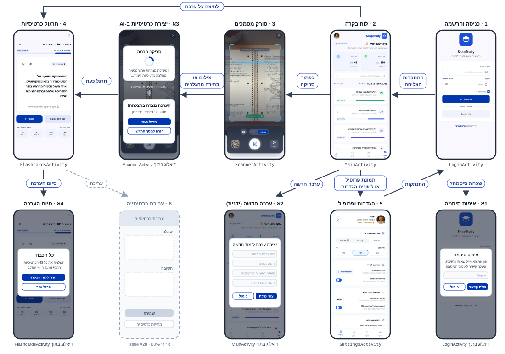

הכנת כרטיסיות שינון לוקחת הרבה זמן: עוברים על הסיכום, מנסחים שאלות ומקלידים אותן אחת-אחת, ובסוף נשאר מעט זמן לתרגל. SnapStudy חוסכת את השלב הזה. מצלמים דף ממחברת או מספר (או בוחרים תמונה מהגלריה), האפליקציה שולחת את התמונה ל-Gemini ומקבלת בחזרה ערכה של שאלות ותשובות. אחר כך מתרגלים עם כרטיסיות שמתהפכות, מדרגים כמה כל שאלה הייתה קשה, והאפליקציה עוקבת אחרי רצף ימי הלימוד והיעד היומי. הערכות נשמרות בטלפון ובענן (Firebase), כך שהן מחכות בכל התחברות. קהל יעד: תלמידי תיכון וסטודנטים שמתכוננים למבחנים.
Issues #1–#8 כבר פתוחים במאגר. השלבים הגדולים מ-WORKPLAN.md (#5–#8) מפורקים כאן
ל-Issues קטנים של 2–5 שעות, כדי שאפשר יהיה לסגור כל אחד מהם בשבוע-שבועיים. הערכת הזמן היא בשעות עבודה (כיתה + בית).
| # | כותרת ה-Issue | שלב | תווית | הערכה | מצב |
|---|---|---|---|---|---|
| שלב 1 – עיצוב ושלד האפליקציה | |||||
| 1 | עיצוב מסכי הליבה ב-Stitch: כניסה, לוח בקרה, סורק | – | design | 4 | סגור |
| 2 | השלמת מסכי התרגול וההגדרות ב-Stitch ותרשים מעברים | – | design | 3 | סגור |
| 3 | שלד האפליקציה: 5 Activities, קובצי Layout וניווט בין המסכים עם Intents | – | setup | 5 | סגור |
| שלב 2 – משתמשים ונתונים (Issue #5) | |||||
| 9 | הרשמה והתחברות עם אימייל וסיסמה, כולל שחזור סיסמה | #5 | firebase | 3 | סגור |
| 10 | התחברות עם Google דרך Credential Manager | #5 | firebase | 3 | סגור |
| 11 | מחלקות המודל: StudySet ו-Flashcard | #5 | model | 2 | סגור |
| 12 | StudyRepository: מחלקת Singleton ושמירה מקומית ב-SharedPreferences (JSON) | #5 | model | 3 | סגור |
| 13 | סנכרון הערכות מול Firestore וכתיבת firestore.rules | #5 | firebase | 4 | סגור |
| שלב 3 – מצלמה ו-AI (Issue #6) | |||||
| 14 | מסך הסורק: CameraX, בקשת הרשאת מצלמה ובחירת תמונה מהגלריה | #6 | camera | 4 | סגור |
| 15 | זיהוי טקסט עם ML Kit וציור המסגרת סביב הדף ב-DocumentOverlayView | #6 | camera | 5 | סגור |
| 16 | צילום אוטומטי אחרי 1.1 שניות של יציבות, מצב ידני ופלאש | #6 | camera | 3 | סגור |
| 17 | GeminiStudyService: שליחת התמונה ל-Gemini ופענוח תשובת ה-JSON | #6 | ai | 5 | סגור |
| 18 | שמירת הערכה שנוצרה, חיווי טעינה, הודעת שגיאה ומעבר לתרגול | #6 | ai | 3 | סגור |
| שלב 4 – תרגול, לוח בקרה והגדרות (Issue #7) | |||||
| 19 | מסך התרגול: כרטיסייה מתהפכת (3D Flip) וסרגל התקדמות | #7 | ui | 4 | סגור |
| 20 | דירוג קושי (שוב / קשה / טוב / קל) ועדכון מרווחי החזרה | #7 | feature | 2 | סגור |
| 21 | לוח הבקרה: רשימת הערכות, חיפוש ויצירת ערכה ידנית | #7 | ui | 4 | סגור |
| 22 | רצף ימי למידה (Streak) ויעד כרטיסיות יומי | #7 | feature | 3 | סגור |
| 23 | מסך ההגדרות: ערכת נושא, יעד יומי, שעת תזכורת, צלילים והתנתקות | #7 | ui | 3 | סגור |
| שלב 5 – ספר הפרויקט ובדיקות (Issue #8) | |||||
| 24 | ספר הפרויקט: פרק הארכיטקטורה ותרשים המחלקות | #8 | docs | 3 | סגור |
| 25 | ספר הפרויקט: תרשים זרימת המסכים ומדריך למשתמש | #8 | docs | 3 | סגור |
| 26 | בדיקות: בלי רשת, בלי הרשאת מצלמה, צילום מטושטש, ותיקון הבאגים שנמצאו | #8 | qa | 4 | פתוח |
| 35 | דקות הריכוז בלוח הבקרה לא מתעדכנות (תמיד 0) | #8 | bug | 2 | פתוח |
| 36 | מצב הפלאש "אוטו" בסורק לא עובד (מתנהג כמו כבוי) | #8 | bug | 1 | פתוח |
| סה"כ עד אבן הדרך של 80% | 76 | ||||
| 27 | התראה יומית בשעת התזכורת שנבחרה בהגדרות (Notifications) | – | after-80 | 4 | פתוח |
| 28 | עריכה ומחיקה של כרטיסיות וערכות, כולל שינוי שם לערכה | – | after-80 | 4 | פתוח |
| 29 | ערכה אחת מכמה דפים (צילום כמה עמודים ברצף) | – | after-80 | 5 | פתוח |
| 30 | מצגת וסרטון הדגמה לבחינת הבגרות | – | after-80 | 4 | פתוח |
Issue #4 הוא אבן הדרך עצמה (הגשת 80% ב-1.1.2027), ויש לו Milestone במאגר שכל ה-Issues של שלבים 2–5 משויכים אליו. המשימות האפורות מתוכננות לאחרי ההגשה. #35 ו-#36 נוספו ב-21.10, אחרי בדיקה של הקוד מול המסמכים.
סיפור משתמש: בתור תלמיד, אני רוצה שאחרי שצילמתי דף מהמחברת האפליקציה תכין לבד שאלות ותשובות מהחומר, כדי שלא אצטרך להקליד כרטיסיות בעצמי.
הגדרת "גמור":gemini-2.5-flash.response_mime_type: application/json, והתשובה מפוענחת ל-StudySet עם כותרת ורשימת Flashcard.זמן עבודה מתוכנן: כ-6 שעות בשבוע (שעות המגמה + בית). השבועות מתחילים ביום ראשון, והשלבים תואמים ל-WORKPLAN.md.
| שבוע | תאריכים | Issues לשבוע | שעות | מצב / הערות |
|---|---|---|---|---|
| 1 | 4.10–10.10 | #1, #2 עיצוב המסכים ב-Stitch | 7 | הושלם |
| 2 | 11.10–17.10 | #3 שלד האפליקציה וניווט בין המסכים | 5 | הושלם |
| 3 | 18.10–24.10 | #9 התחברות באימייל וסיסמה, #10 התחברות עם Google | 6 | הושלם |
| 4 | 25.10–31.10 | #11 מחלקות המודל, #12 StudyRepository ושמירה מקומית, #13 Firestore (התחלה) | 7 | הושלם מוקדם |
| 5 | 1.11–7.11 | #13 (סיום), #14 מסך הסורק ו-CameraX | 6 | הושלם מוקדם |
| 6 | 8.11–14.11 | #15 זיהוי טקסט ב-ML Kit, #16 צילום אוטומטי (התחלה) | 6 | הושלם מוקדם |
| 7 | 15.11–21.11 | #16 (סיום), #17 חיבור ל-Gemini | 7 | הושלם מוקדם |
| 8 | 22.11–28.11 | #18 שמירת הערכה ומעבר לתרגול, #19 מסך התרגול (התחלה) | 6 | הושלם מוקדם |
| 9 | 29.11–5.12 | #19 (סיום), #20 דירוג קושי, #21 לוח הבקרה (התחלה) | 6 | הושלם מוקדם |
| 10 | 6.12–12.12 | #21 (סיום), #22 Streak ויעד יומי | 4 | הושלם מוקדם |
| 11 | 13.12–19.12 | #23 מסך ההגדרות, #24 ספר: פרק ארכיטקטורה | 6 | הושלם מוקדם |
| 12 | 20.12–26.12 | #25 ספר: תרשים מסכים ומדריך למשתמש, #26 בדיקות (התחלה) | 6 | #25 הושלם |
| 13 | 27.12–1.1 | #26 (סיום), #35 דקות ריכוז, #36 מצב פלאש | 4 | הגשת 80% |
כל Issue מהטבלה הקודמת מופיע כאן, וסכום השעות זהה: 76 (שעות הרזרבה הוקצו ל-#35 ו-#36). עדכון 21.10: הקוד של #9–#25 כבר מוכן ונבדק, ולכן השבועות שלהם מסומנים "הושלם מוקדם".
| עובד ב-1.1.2027 (נכלל ב-80%) | לא נכלל – מתוכנן לינואר עד מרץ |
|---|---|
|
|
התרשים בנוי לפי הקוד בחבילה com.yalig.snapstudy. בנאים, getters ו-setters לא מופיעים כדי שהתרשים יישאר קריא.
סימונים: - פרטי, + ציבורי, # מוגן, קו תחתון = static.

getInstance()), וכל המסכים עובדים מולו.users/{uid}/study_sets/{setId}.

onDraw() את המסגרת סביב הדף ש-ML Kit זיהה.onSuccess עם StudySet חדש או onError עם הודעה למשתמש.
| תאריך | מה שאלתי | מה עשיתי עם התשובה |
|---|---|---|
| 18.10.2026 | ביקשתי מ-Claude לבדוק אם תרשים המחלקות הקודם שלי (SnapStudy_ClassDiagram.puml) תואם לקוד. |
נמצאו פערים: בתרשים הישן חסרו CredentialManager ב-LoginActivity, showTimePickerDialog() ב-SettingsActivity
ו-setDailyGoal() ב-StudyRepository, ובכרטיס הספיד-דייטינג רשמתי ל-GeminiStudyService שדה apiKey שבפועל נמצא ב-GeminiConfig.
התרשים בפרק 4 עודכן לפי הקוד. |
| 18.10.2026 | ביקשתי מ-Claude לעזור לפרק את השלבים מ-WORKPLAN.md ל-Issues של 2–5 שעות ולבנות מהם תכנית שבועית. |
החלוקה והתכנית נמצאות בפרקים 2–3. נבדק שכל Issue מופיע בתכנית ושסכום השעות זהה בשתי הטבלאות. |
| 18.10.2026 | ביקשתי מ-Claude לבנות את תרשים זרימת המסכים מעיצובי ה-Stitch שלי ולבדוק מול הקוד אילו מעברים באמת קיימים. | במסך הכניסה המקורי היה כפתור Apple שהוסר מהאפליקציה, ולכן הוא לא מופיע בתרשים. נמצא גם שמחיקה ועריכה של ערכה עוד לא ממומשות, והן עברו ל-Issue #28 אחרי ה-80%. |
| 21.10.2026 | ביקשתי מ-Claude לבדוק מה כבר מומש בקוד, לעדכן לפי זה את ה-Issues ואת המסמכים, ולבדוק אם פספסתי משהו. | #9–#25 נסגרו עם הערה על מה שנבדק בקוד. נמצאו שני פערים שנפתחו כ-Issues: דקות הריכוז לא מתעדכנות (#35), ומצב פלאש "אוטו" לא עובד (#36). גם תרשים המחלקות וספר הפרויקט עודכנו לפי השינויים האחרונים בקוד. |